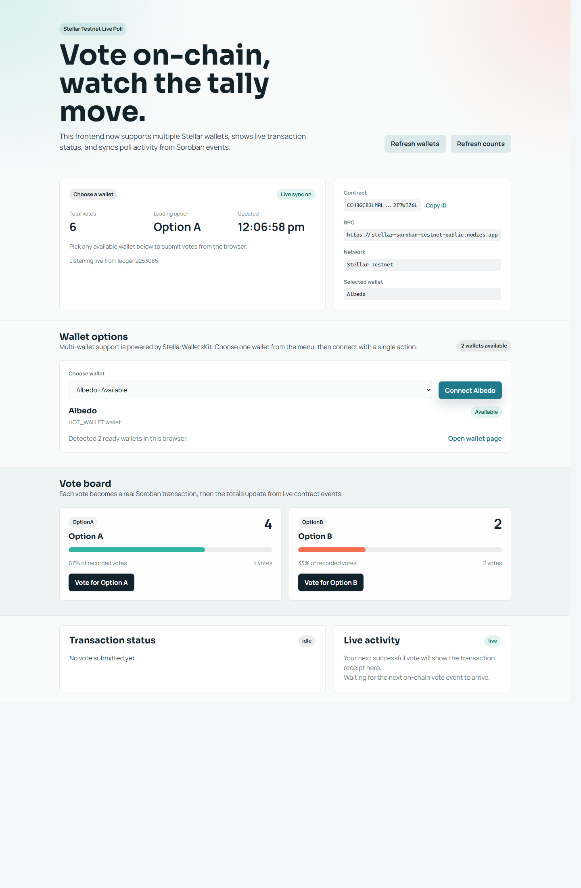

A quick guided pass through wallet selection, on-chain voting, and live Soroban event syncing.

The app loads current vote totals, contract details, network state, and wallet availability in a single dashboard.
Refresh detected wallets, select one supported browser wallet, and connect it to the poll on Testnet.
Vote for Option A or Option B and watch the board reflect the latest tally from the deployed Soroban contract.
The transaction panel and live activity feed surface receipts, contract events, and up-to-date poll progress.